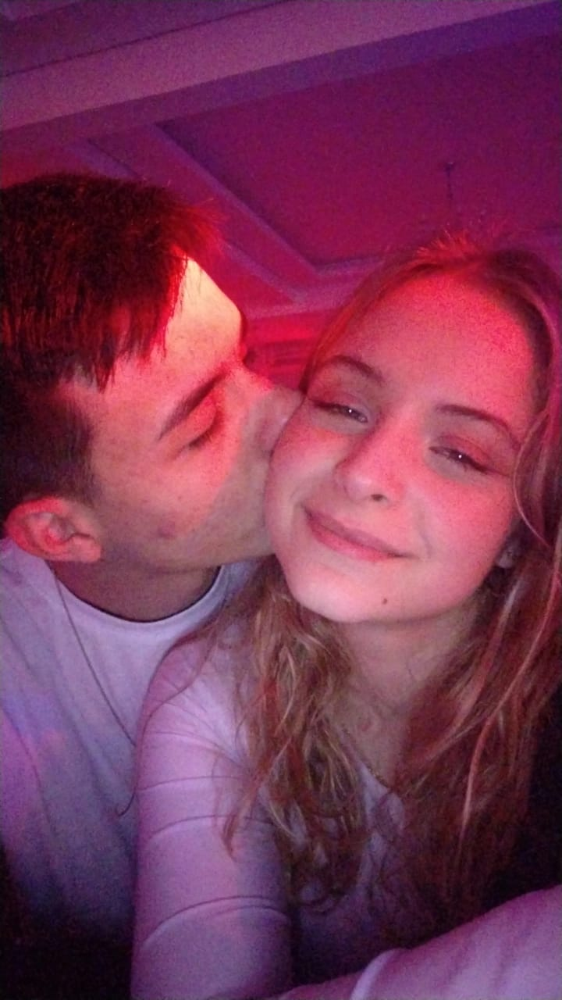
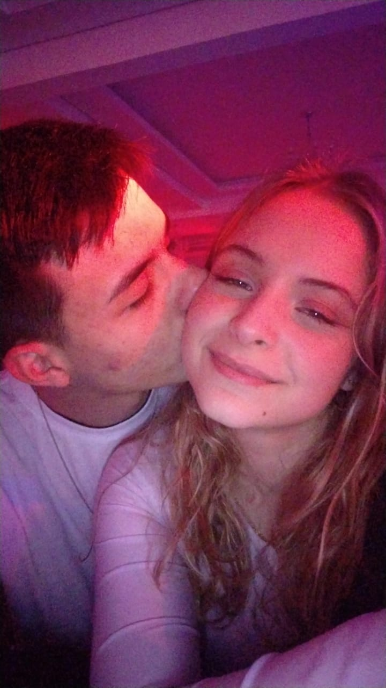

.jpeg)
Séloko, 2 anos, são muitos minutos, muitas horas muitos dias e muitas coisas, varios momentos, lembra como a gente era no começo?? dois tonduinhos timidos, cada um num lado do sofa, quem diria que nesse mesmo sofa a gente fez cada coisa ja né. eu ja te escrevi algumas mensagens e a criatividade pra algo novo acabou, mas eu to aqui tentando. ultimamente a gente tem se desentendido bastante, normalmente eu não gosto de me estressar, mas por algum motivo eu não consigo dessistir de você vai parecer bobo, mas parece algo magico sabe, eu quero você comigo pra sempre, por mais que a gente se estresse um com o outro eu não consigo viver longe desse estresse, meu coração ama cada pedacinho seu até aqueles que você não gosta. o que eu quero dizer com isso?? que eu te amo muito, de verdade, como nunca amei ninguem, então esses dois anos são apenas um fragmento de uma vida toda que eu quero ter do seu lado. esses dois anos foram apenas um "trailer" doq a gente vai viver pitiquinha, eu prometo te amar pra sempre, eu te amei ontem, amei hoje, vou amar amanha e pra sempre.
Feliz 2 anos nosso meu amor.
.jpeg) 
